CVE-2017-17215 拓展
条评论拓展
前面已经搞定了环境，执行了exp。
现在，用这个搭好的环境来做一点其他事。
比如说，劫持一些执行命令的函数：sytem ,execve，popen ，记录它们执行过的参数，存到一个日志文件。
方便我们观察，看看有没有可能某些参数来至于我们输入的东西。
所以，首先要做到劫持这些函数。可以自行实现一个so用来做劫持。
然后，这个so库预加载起来。比如说写到 \/etc\/ld.so.preload 文件中。
在来执行web界面程序。就能捕获到web界面上由sytem ,execve，popen执行的参数。
编写 So
自定义so去实现系统函数的劫持。我打算用 dlsym()。
下面以hook system 函数举例。1
2
3
4
5
6
7
8
9
10
11
int system(const char *command)
{
int (*new_system)(const char *command);
int result;
write_log_file(command,sysFlag); // 记录参数到日志文件
new_system = dlsym(RTLD_NEXT,"system");
result = new_system(command);
return result;
}
记录参数的函数write_log_file，把日志文件写到 tmp目录下1
2
3
4
5
6
7
8
9
10
11
12
13
14
15
16
17
18
19
20
21
22
23
24void write_log_file(const char *data,int Flag)
{
char *log_file = "/tmp/hook.log";
FILE *fp = fopen(log_file, "r");
if(!fp)
{
fp = fopen(log_file, "a");
fclose(fp);
chmod(log_file, 0777);
}
else
{
fclose(fp);
}
fp = fopen(log_file, "a");
switch(Flag)
{
case sysFlag:fprintf(fp, "system para:%s\n",data);break;
略...
}
fclose(fp);
}
其他函数劫持的写法同上。
然后记得用小端mips gcc编译，编译参数： -fPIC -shared -ldl -D_GNU_SOURCE
完整命令： mips-linux-gcc hook.c -o hook.so -fPIC -shared -ldl -D_GNU_SOURCE
这里会有个坑点。放到后面说。
编译好后得到 hook.so
测试用例 test
写好so库，首先来写个测试程序试试。1
2
3
4
5
6
7
8
9
10
11
12
int main()
{
puts("Hello world!n");
char *arg = "ls -l";
system(arg);
return 0;
}
同样mips gcc 编译： mips-linux-gcc test.c -o test
测试
把hook.so 与 test 都放到搭建好的qemu模拟的虚拟环境下。
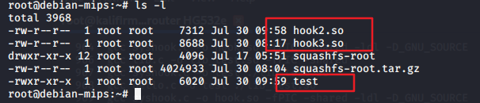
ps：我这里名字叫hook2.so
因为我们是要劫持路由器Web服务的函数，所以开启web服务时就要让它加载上hook.so。这是成功的关键。
前面说，把hook.so路径写入到\/etc/ld.so.preload，就能实现预加载。查查资料就会知道这个 ld.so.preload是干什么用的。
它其实将想要预加载so库，加载到后续所有要执行的文件。用 ldd 命令可以查看。
初次执行ldd test，如下图。
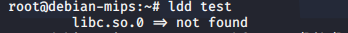
只有一个 libc.so.0 \= > not found
而且 ./test 执行不了，因为缺主要的so依赖。在 squashfs-root\/lib\/下有需要的so：libc.so.0 ，ld-uClibc.so.0，ld-uClibc-0.9.30.so ， libuClibc-0.9.30.so
这几个统统拷贝到qemu下的 lib 目录下。
cp squashfs-root\lib\libc.so.0 /lib/
…
再次执行ldd test，如下。
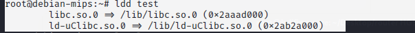
ld.so.preload
这个时候来编辑/etc/ld.so.preload ，先看看这个文件存在不存在。
cat /etc/ld.so.preload
存在不存在其实都无所谓。
接着把 hook.so 绝对路径写进去。这里先提前把 hook.so 放到 tmp目录下，因为输出的日志文件也是tmp下的。
那么，用命令：echo /tmp/hook.so > /etc/ld.so.preload ，如下图。
再来执行ldd test，如下。
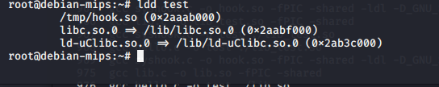
看到多了一个 /tmp/hook.so (0x2aaab000)，说明ld.so.preload有用。
dlsym
接着，运行一下test。
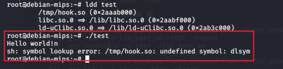
有个错误，说不认识 dlsym 。这个函数呢，实际上是在squashfs-root/lib/下的libdl.so.0里面。
所以呀，我们把libdl.so.0拷贝到 tmp下。 然后也写入ld.so.preload中。
echo /tmp/libdl.so.0:/tmp/hook.so > ./etc/ld.so.preload
再次提醒，我们前面的操作，到目前为止都是在 qemu 本身模拟的环境，没用chroot 切换到路由器目录，所以还没有对路由器进行测试
再来 ldd test，会发现出错，但是没关系。我们执行一下 ./test ，如果 tmp 下创建了 hook.log 说明我们的hook.so成功了。
如下图。
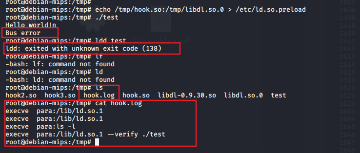
也能看到 hook.log 文件里确实记录了参数。为了保险起见，再确认一些 ld.so.preload 确实起作用了。
那么，把ld.so.preload清空：echo “” > /etc/ld.so.preload
删除hook.log：rm -f hook.log，再次运行test。如下。
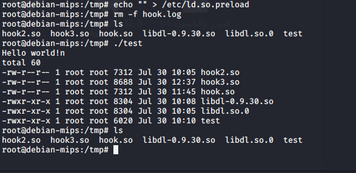
没有创建 hook.log ，再次说明ld.so.preload设置有用。
Chroot squashfs-root sh
前面在qemu模拟的mips下说明ld.so.preload有效。那么，chroot切换到路由器来试试。
Chroot squashfs-root sh
把test ，hook.so 复制到 squashfs-root/tmp/ ，如下。
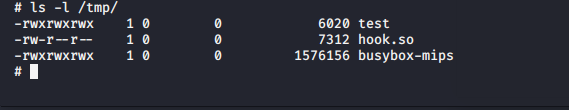
可以看到，我还另外放了一个busybox-mips ，因为路由器文件系统的busybox支持的命令太少。
ldd命令用不了。所以，直接运行test看，然后以有没有hook.log生成来判断这个文件系统中 ld.so.preload 是否有用。
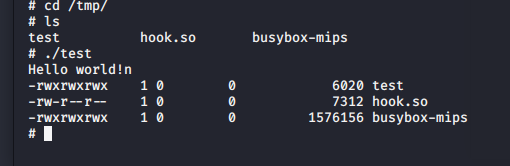
执行成功，但是没有hook.log。
那么，设置 ld.so.preload，如下。
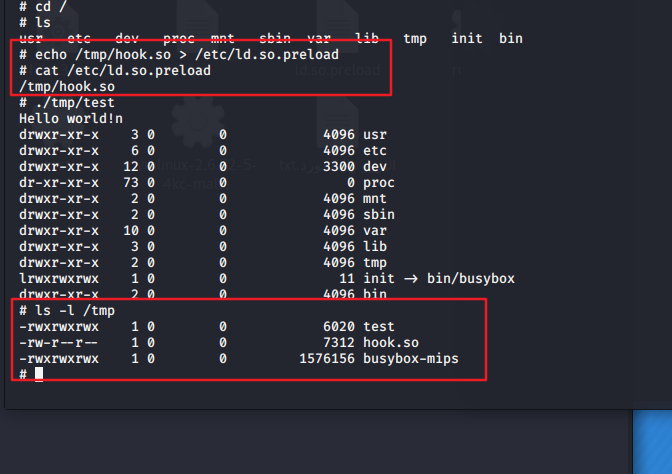
可以看到，虽然设置了 ld.so.preload，test也成功运行了。但是，并没有hook.log 文件。说明，这样设置的ld.so.preload，不会起作用。
那么，用 export LD_PRELOAD=/tmp/hook.so 试试
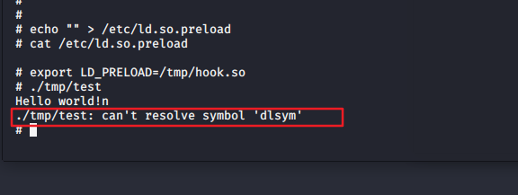
从图上看，ld.so.preload清空，然后运行test报一个dlsym错误，说明export这样设置成功了。那把libc.so.0也export。
export LD_PRELOAD=/tmp/hook.so:/lib/libdl.so.0
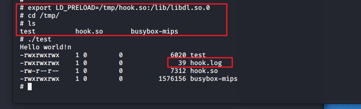
成功了。
这说明一个问题，也就是用chroot切换到路由器文件系统中，设置 ld.so.preload 不会起作用。至少是对这个测试来看。用export LD_PRELOAD 是有效的。
那我们用 export也设置一下，然后用当前设置的终端执行: ./bin/upnp ./bin/mic
你会发现执行起来的web服务中会带上hook.log。
Exp 测试
用CVE2017-17215的exp测试一下，能看到我写的So库抓到了system执行的命令。
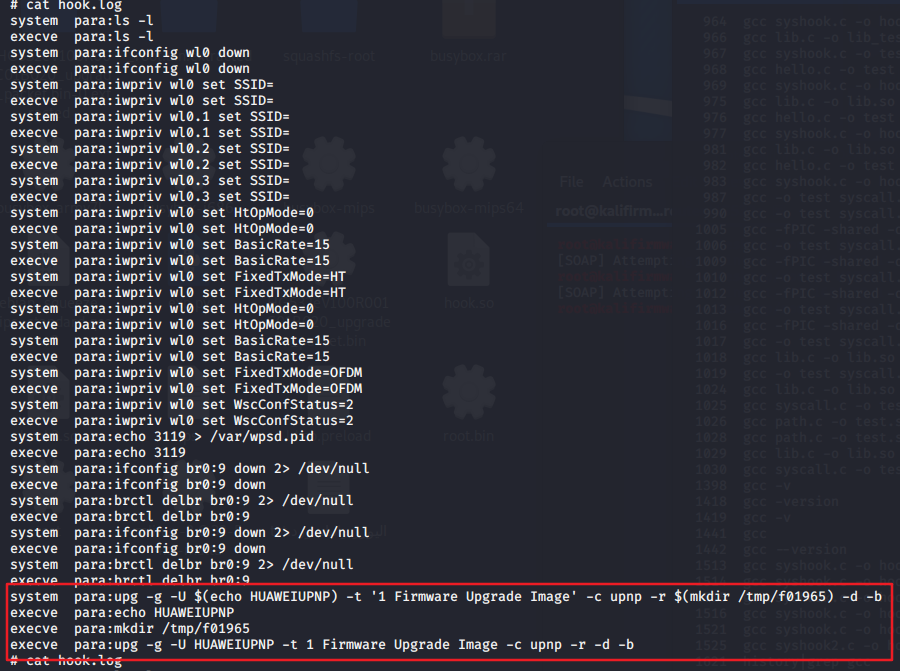
坑点
前面编译的时候说到有坑，就是在用Mips gcc编译，命令是：mips-linux-gcc hook.c -o hook.so -fPIC -shared -ldl -D_GNU_SOURCE
这个命令中，参数 ldl 可以有，也可以没有，都能编译通过。
但是编译出来的 hook.so 中，用IDA查看，程序启动没有加载 libc.so.0。我是很纳闷的，有知道的师傅可以告诉一下。
如下图。
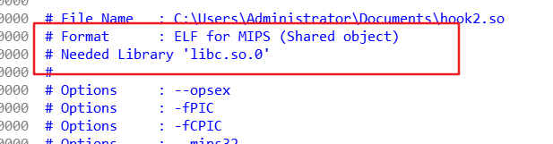
但是，但是，用 Linux gcc 编译的话，有ldl，就会带上libc.so.0。如下图。
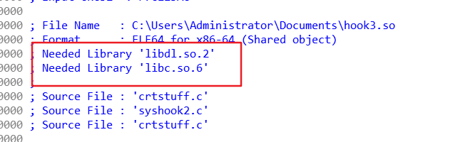
图上是libc.so.6，因为我linux版本比较高。
若没有 ldl 就不会带上libc.so.6。